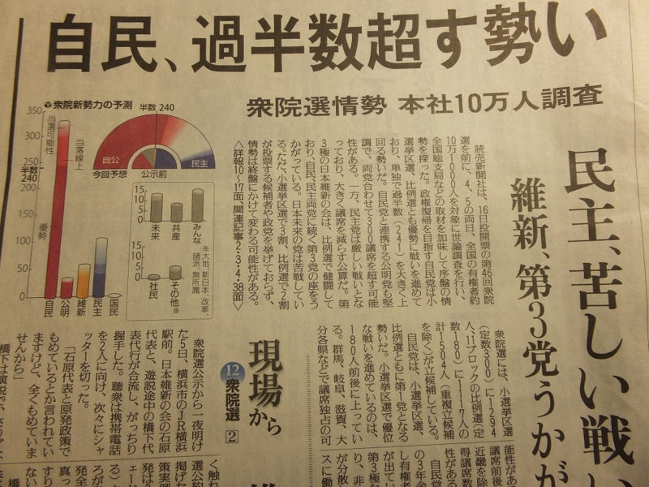

投票してきたったった―― 期日前投票のおすすめ
公開日：
選挙は、選挙期日（投票日）に投票所において投票することを原則としていますが（これを投票日当日投票所投票主義といいます。）、期日前投票制度は、選挙期日前であっても、選挙期日と同じく投票を行うことができる（つまり、投票用紙を直接投票箱に入れることができる）仕組みです。
“投票日当日主義”には何のメリットもない。

たとえば、これ。世の中には天邪鬼だの判官贔屓だのが多い*1から、こういう報道ひとつで“空気”が変わり得る*2。けれど、投票というのは本来、自分の考えを表明するためのもので、それ以外の目的で行使すべきではない*3。周りの雰囲気に流されて投票すれば、本来の支持に乖離して、特定の党へ過大な権力を与えてしまう。美人投票とバブル経済のメカニズムにちょっと似ているので、“バブル政治”現象と呼んでいいかもしれない。
それでなくとも、デマゴーグの暗躍がすさまじい。投票日が近づくにつれてますます酷くなる。自民党が基本的人権を否定して徴兵制と戦争を画策してるだの、民主党が選挙カーで迷惑なことをしているだの*4。インターネットでの選挙運動を解禁する動きもあるけれど、自分が Twitter などを見ている限りでは、それはそれはヒドい。理念としては賛同が、実践すると破たんすると思う。
ともあれ。
そういうものに流されないための最良の方法は、さっさと投票を済ませてしまうことだ。期日前投票、マジおすすめ。
P.S.
どこに投票したかって？ 秘密！ ただ、自民党でも民主党でもないことは付記しておく。
自分が今望むことは、まず地方分権化かな。国と地方の役割分断を明確化しないと、責任があいまいになって、どちらも遠くない将来に財政破たんするだろう。そのほかの希望については、あなたの望む政策を3つだけ挙げてください - だるろぐ および ユートピア的「埋蔵金」掘り当て政策 - だるろぐ にまとめてある。